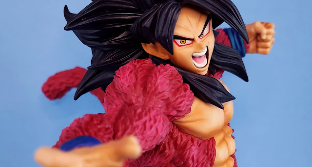
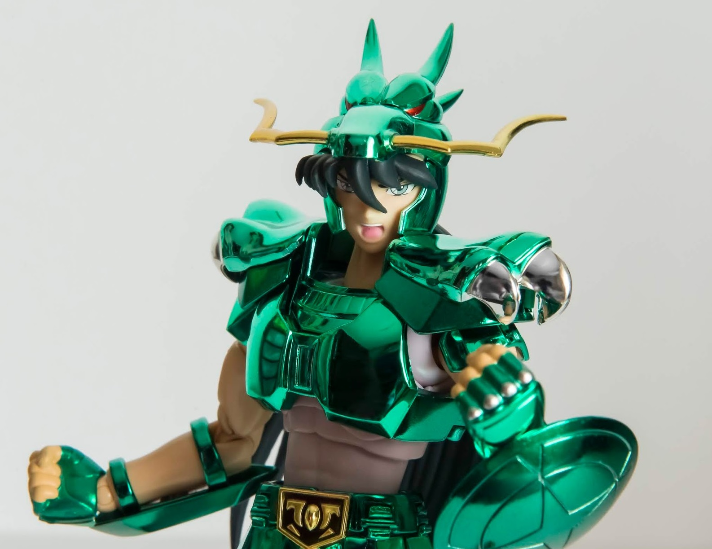
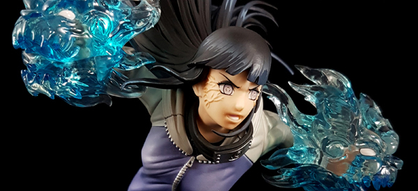
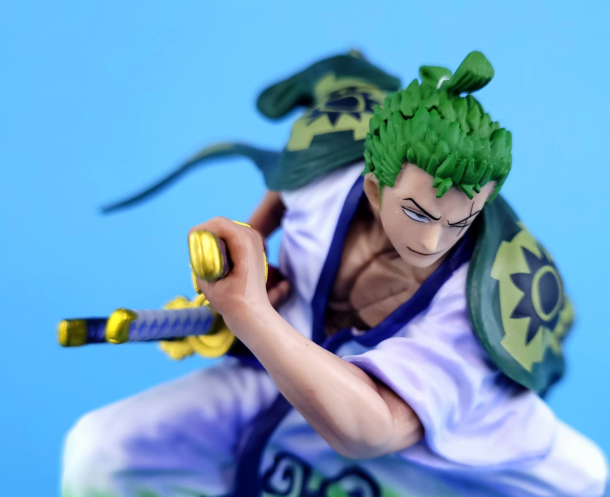

Review Super Master Stars Piece, The super saiyan 4 son Goku - Banpresto
Publicado el 14 de agosto de 2023

Esta figura posee una gran calidad en los acabados siendo una opción más que
excelente para todos los que vibramos con Dragon Ball GT. Además, Banprestolanzará en las proximas
semanas esta figura en dos versiones diferentes, la normal, que es la que ven en la imagen y la dos
dimenciones. Esta ultima versión de color parecida al manga para darle un toque extra a la
figura.
Esta figura es una reedición de la que salió hace un año, pero no podemos dejar de insistirles, si
aun no la tienen, deben ir ya a reservarla. Por que es una figura que hará que sus vitrinas de
dragon Ball mucho mejor que antes.
Review Myth Cloth V1 Shiryu del Dragón - tamashii Nations
Publicado el 22 de Junio de 2023

¡La figura de Shiryu es simplemente Increible! Los detalles en la expresión facial
y los accesorios incluidos son impresionantes. La posibilidad de cambiar las manos y las poses añade
mucha diversión a la figura. Además, la calidad de construcción es excelente, y los colores son
vibrantes y fieles al personaje del anime. Definitivamente es una adición fantástica a cualquier
colección de fanáticos de los Caballeros del Zodiaco.
Review hinata hyuga de naruto shippuden - tsume art
Publicado el 08 de Marzo de 2023

Tsume Art tiende a prestar mucha atención al diseño de sus figuras, capturando la esencia y
personalidad del personaje de manera precisa. La escultura es meticulosa, con detalles que incluyen
expresiones faciales, ropa y accesorios. Muchas figuras de Tsume Art vienen con bases decorativas
diseñadas para complementar la figura y realzar su aspecto general. Estas bases pueden representar
elementos del mundo del personaje o del entorno de la serie.
Review Figuarts Zero Roronoa Zoro - tamashii nations
Publicado el 09 de Febrero de 2023

La figura Figuarts Zero Roronoa Zoro de Tamashii Nations captura la esencia del famoso espadachín de
la tripulación de los Piratas del Sombrero de Paja en la serie One Piece. La atención al detalle y
la fidelidad al diseño original del personaje son aspectos que destacan en esta figura.
Una de las características distintivas de la línea Figuarts Zero es la increíble atención a los
detalles en la escultura. La figura Roronoa Zoro seguramente presenta una escultura meticulosa en su
ropa, musculatura y expresiones faciales. La pose elegida para la figura probablemente captura un
momento emblemático de Zoro, ya sea desenvainando sus espadas o mostrando una postura de combate
característica. La pose dinámica y enérgica le da vida al personaje y hace que la figura sea
atractiva visualmente.